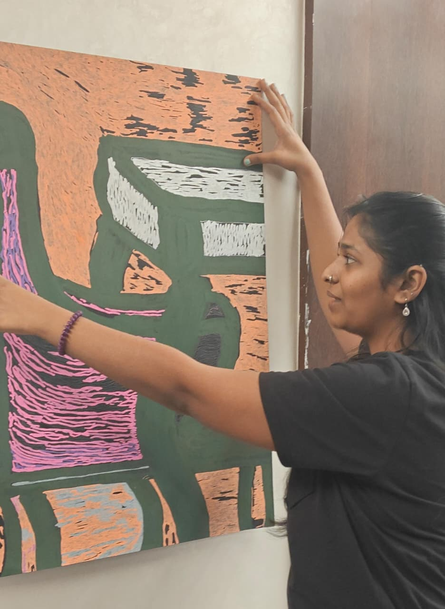
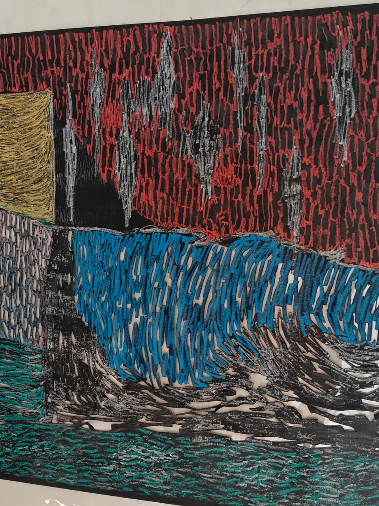

KRITIKA GOEL
Studio Visit 01 |
Multimedia Artist


How do materials alter what we perceive before we consciously interpret them?
Entering Kritika's studio, the paintings first register as visual events rather than references to places, scenes, or stories. Dense swarms of strokes, layered surfaces, and shifting colour relationships establish an internal logic of their own. While lived experience and domestic observation remain points of departure, they do not function as explanations. The work asks to be encountered first through its formal and material presence.
Beneath this visual language is an attentiveness to forms of resonance and dissonance that rarely announce themselves directly. A recurring sensitivity to the distance between one's own choices, perceptions, ways of being and the conditions that surround them remains present throughout the practice. Rather than seeking resolution, the work gives space to this interval, allowing a sensory field to emerge that remains active, unsettled, and continually in formation.
Gelly Roll neon inks, Solid Markers, glass paint on looking glass, and reflective tape enter this inquiry as materially distinct visual propositions. Chosen as much for their perceptual qualities as their material character, they introduce shifts in light, reflection, opacity, and spatial tension. The language may have changed from earlier digital works, but the underlying inquiry remains consistent: how a sense of distance, resonance, or misalignment might be held without collapse or resolution. Rather than supporting an image, these materials increasingly shape the terms through which the work is encountered.

The inquiry ultimately arrives at a shift in material authority. Surfaces move between the subtle friction of mark-making and the synthetic intensity of industrial materials, allowing colour, reflection, and light to operate with increasing independence. The conditions through which seeing become part of the work itself.